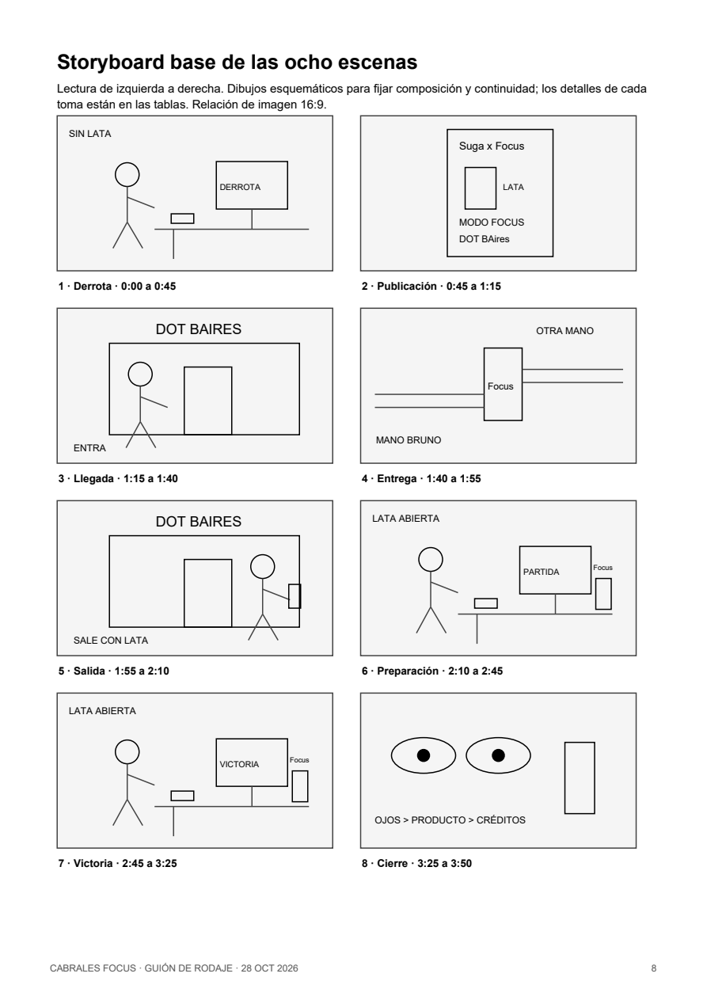

Respuestas
Encuesta exploratoria del grupo.
Taller de Narrativas Digitales · UADE · 2026
Una revancha. Una decisión.
Una historia que se expande.
Franco Denk · Tomas Hokama
Explorar la campaña ↓Proyecto académico · Producto y colaboraciones propuestos

01 / Concepto e investigación · 2 minutos con personas
Coffee Cold Brew · 240 ml
Cabrales Focus es un concepto académico de Coffee Cold Brew en lata de 240 ml, con L-teanina como ingrediente propuesto. La firma “Precisión que se toma” asocia la marca con la preparación y el disfrute de una buena partida. Su promesa sugerida es “Puede ayudarte a encontrar tu foco y acompañar tu próxima partida”. Se conserva la lata disponible y su denominación Coffee Cold Brew, sin añadir coco. La formulación y los beneficios funcionales siguen siendo una propuesta académica, no una validación técnica ni una garantía de victoria.
Encuesta exploratoria del grupo.
30 de 36: interesados o muy interesados.
23 de 36: diario o varias veces por semana.
Adjuntos de Notion revisados el 31/10/2026. Muestra no representativa; sin fecha de campo confirmada. El interés declarado no equivale a compra ni prueba beneficios. Coffee Cold Brew mantiene la lata existente; coco obtuvo 0 respuestas.
Clases 1 y 2 · La identidad visual y una voz cercana mantienen el reconocimiento entre medios. Negro, café, blanco y cian; el tono cambia según la situación.
02 / Personas
Estudiante y gamer. Quiere disfrutar con su equipo; las notificaciones compiten por su atención.
Instagram → Modo Focus → YouTube → comunidad.
Único personaje interpretado en cámara.Analista de datos. Alterna informes y mensajes; busca terminar una tarea con claridad.
Stories → Club Focus → relato escrito.
Expansión escrita, sin actriz ni otra jornada.Arquetipos del TP1, no personas identificadas en la encuesta. Audiencia propuesta: adultos.
03 / Storytelling · 1:30 minutos
Bruno pierde una ronda decisiva de VALORANT al distraerse con el celular. Mientras scrollea descubre una publicación de Suga que invita a probar Cabrales Focus en Modo Focus, en Dot Baires Shopping. Al día siguiente visita el lugar y recibe una lata. Esa noche prepara otra partida: aparta el celular, abre el café y se acomoda los auriculares. Ante un nuevo uno contra uno, escucha, espera y gana. Su mirada se funde con los ojos gráficos del búho; aparecen el producto, el llamado a compra y los créditos. La victoria con la lata cierra la historia, sin una escena posterior de abandono del juego.
La notificación interrumpe. Una invitación abre otra oportunidad.
Bruno recibe la lata y prepara el escritorio.
Espera, escucha y gana. Ojos → búho gráfico → lata → compra conceptual.

Observación, actividad nocturna y precisión. No aparece físicamente en el corto ni interviene en la partida.
Clase 3 · Tres actos con Lupton; notificación, pasos y apertura como detalles sensoriales. Clase 6 · Una transformación que se puede resumir en cinco segundos.
04 / Eje audiovisual · 3:50 minutos
29 planos · 8 escenas · 1 actor · 1 camarógrafo
Planos generales, medios, primeros planos y detalles. Subtítulos, créditos por rol y publicación no listada en YouTube.
Interior habitación, noche. Bruno queda solo en la ronda. Una notificación le hace apartar la mirada; reacciona tarde y pierde.
Interior, misma noche. Bruno scrollea, vuelve a la publicación de Suga y guarda la invitación a Modo Focus.
Exterior y acceso de Dot, día siguiente. Con otra remera, Bruno llega y reconoce el lugar de la invitación.
Interior sugerido de Dot. Solo dos manos: una ofrece la lata y Bruno la recibe. No se necesita montar un stand.
Exterior, día. Bruno sale con la lata cerrada, la observa y se aleja.
Habitación, noche del segundo día. Bruno prepara su espacio, aparta el celular, abre la lata y se dispone a jugar.
Misma noche. Nuevo uno contra uno: escucha, espera y actúa. Gana la ronda y sonríe con la lata abierta a su lado.
Gráfica. Los ojos de Bruno se funden con los del isotipo. Producto, llamado a compra y créditos cierran el corto.

La carga local permite ensayar durante esta sesión; no guarda archivos ni reemplaza los enlaces finales.
05 / Mapa y remisiones · 2 minutos
YouTube
Relato completo de Bruno: derrota, descubrimiento, visita y victoria.
↗ Descripción hacia Club Focus y P5.
Precuela de la partida, invitación que descubre Bruno y elecciones de la comunidad.
↗ Perfil hacia agenda de Modo Focus; P6 hacia relato de Solange.
TikTok
Origen simbólico del búho; memoria cultural del torneo; consecuencia nueva de la victoria y CGU.
↗ Perfil hacia corto y Archivo de ventanas.
Twitch
Dos dilemas inéditos discutidos y votados en vivo; la comunidad propone un tercero.
↗ Chat fijado hacia Club Focus; archivo devuelve casos para el vivo.
Modo Focus en Dot
El visitante elige una distracción, realiza una preparación breve y recibe el objeto que lleva a su próxima partida.
↗ QR hacia Club Focus y el corto tras su estreno.
Club Focus
Relato escrito de Solange y aportes autorizados del público; acceso a las demás historias.
↗ Enlaces a YouTube, agenda, piezas y Twitch.
Jenkins y Scolari · Clases 4 y 5. Precuela, secuela, otra perspectiva y participación aportan contenidos autónomos. Un repost distribuye la misma pieza; no agrega un capítulo.
06 / Publicaciones · 3 minutos, incluidos 95 s de videos
2 imágenes + 3 audiovisuales + 1 libre · Instagram y TikTok
TikTok / Reels · 25 s
Teaser: Bruno pierde el foco, cierra la notebook y se va. La lata queda visible en otro escritorio. Remite al corto de YouTube.
Instagram · Carrusel de 6 placas
Producto, composición propuesta, elaboración, consumo y Club Focus.
Seis placas listas para revisión. Formato 1080 × 1350. Composición académica, sin promesas de eficacia.
Abrir mockup independiente →


← Deslizá horizontalmente para ver las seis placas →
cabrales.focus Tu café, en otro formato. Conocé Cabrales Focus: cold brew de café arábica, con azúcar y L-teanina, listo para acompañar tu rutina. Deslizá para descubrir qué contiene y cómo disfrutarlo. En Club Focus podés encontrar puntos de venta, comprar online y sumar puntos registrando tus latas. Conocé la app desde el perfil. Precisión que se toma. #CabralesFocus #ClubFocus
Producto, formulación y app propuestos para un proyecto académico.
Instagram · Placa · AIDA
Invitación con Suga a Modo Focus y al stream patrocinado propuesto con demostración de Club Focus y del sorteo.
TikTok · 30 s
Encuentro casual simulado con Solange: tres preguntas sobre su café y su rutina.
Instagram Reels · 40 s · RTM
La última bala del Last Chance conecta la escena local con el co-branding propuesto para el FiReMAJOR Buenos Aires 2027. Demo del canje de puntos por bonos.
Instagram Stories · 4 historias
Encuestas y caja de respuestas sobre pausas y distracciones. Remisión a Historias Focus.
Clase 10 · P3: AIDA. P5: RTM y sorteo propuesto. P4 y P6: participación de la comunidad. Twitch no es una séptima publicación.
07 / Influencer y experiencia · 1:30 minutos
Suga (Malena Souto), creadora argentina vinculada a VALORANT, encaja con la práctica de juego de Bruno y permite conectar una recomendación digital con la activación. Streams Charts informa 125.939 seguidores en la versión accesible consultada el 31/10/2026, con último stream listado el 7/10/2026. Es un registro de referencia, no un corte en tiempo real. Según los rangos de la clase 8, corresponde a macroinfluencer (100.000 a 1 millón). No se dispone de datos verificados sobre edad, ubicación ni engagement de su audiencia; la afinidad temática es una hipótesis de selección. Fuente: https://streamscharts.com/channels/suga
P2 invita a Modo Focus. En Twitch, Guardia compartida presenta dos dilemas inéditos durante 35 minutos: elegir entre competir y practicar con el equipo; cambiar toda una estrategia o revisar una ronda.
Clase 8 · Afinidad temática y credibilidad, además de tamaño. No se confunden seguidores con audiencia garantizada.
Elegir una distracción, preparar el próximo desafío y llevar la lata a la rutina. Propuesta representada con fachada, entrada, intercambio de manos y salida; sin construir un stand.
Clases 5 y 9 · Storydoing, inmersión y extracción: participar en el mundo y llevar un objeto de esa experiencia.
08 / Participación y otra perspectiva
Situación → elección → consecuencia
Solange abrió el informe y encontró la misma frase marcada que había dejado el día anterior. En el chat había cuatro mensajes nuevos. Escribió en una hoja: “Primero, revisar esta página”. Dejó el teléfono a un costado y acercó su café frío. Al terminar el párrafo, envió una pregunta concreta a su compañero: “¿Este ejemplo explica lo que queríamos decir?”. La respuesta no llegó enseguida. Por primera vez esa mañana, no abrió otra ventana para llenar la espera: siguió con la siguiente página. Su nota quedó sobre el escritorio. Mañana podía servirle otra vez.
P5 invita a crear relatos y P6 recoge elecciones. Participación adulta, sin compra ni lata obligatoria. Pedir autorización y acordar crédito antes de publicar.
Clases 4, 5 y 11 · La audiencia puede ampliar el universo. Escuchar interpreta las historias; monitorizar cuenta respuestas y clics.
El cierre del corto invita: “Elegí Focus para tu próxima partida. Compralo en Club Focus”. La vista propuesta de compra debe identificarse como simulación académica, sin pagos ni pedidos.
09 / Calendario y producción · 2 minutos
Abrir relato de Solange, agenda y espacio de próximos estrenos.
Precuela: el plan de Bruno antes de la partida.
Invitación de Suga a Modo Focus; misma pieza que ve Bruno.
Activación propuesta. Dentro de la ficción ocurre después de la derrota y antes de la revancha.
Estreno del corto completo: relata también hechos previos a su publicación.
El símbolo del búho amplía el universo visual.
Bruno al día siguiente de ganar invita a sumar relatos.
Interacción y remisión a Solange y CGU.
Vivo propuesto; selección posterior de contribuciones autorizadas.
Publicación hipotética posterior a la final. No integra como actualidad el lanzamiento de 2026.
Clase 9 · Tiempo del relato y orden de publicación: el corto se estrena después del evento y cuenta la experiencia previa de Bruno. El RTM se presenta por separado como ejercicio histórico.
Dot + habitación + P5. Una persona actúa y otra filma. Las capturas se preparan antes; P3 y P4 pueden resolverse en edición.
Comprensión y retención; clics entre historias; relatos completos y autorizados. Sin resultados ficticios de una campaña no ejecutada.
Club Focus / Prototipo de aplicación
Una app gratuita para descubrir, comprar y sumar experiencias.
10 / Cierre y preparación de entrega
Cabrales Focus · Precisión que se toma.
Relato, guiones, copies, mapa, calendario, encuesta y vínculos teóricos.
Corto, tres videos breves, seis mockups, subtítulos, créditos y enlaces finales.
Consigna TP Final; TP1; TND clases 1 a 11. Encuesta adjunta a decisiones del equipo: 36 respuestas, revisada 31/10/2026. Suga: registro accesible de Streams Charts, consultado 31/10/2026, último stream listado 7/10/2026.
VALORANT Esports · balance oficial de 2025 · Final oficial · 5/10/2025
Franco Denk · Tomas Hokama